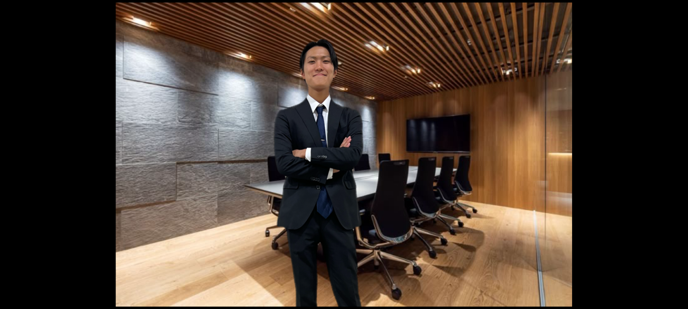
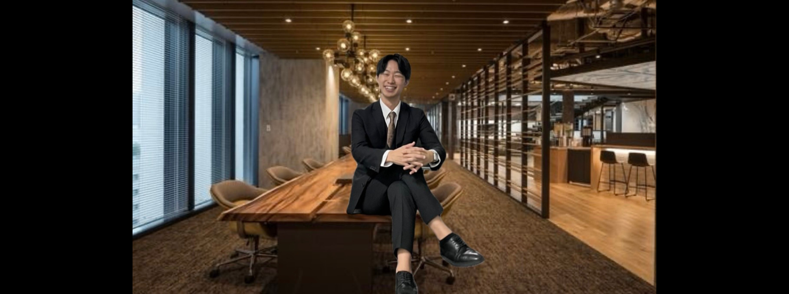
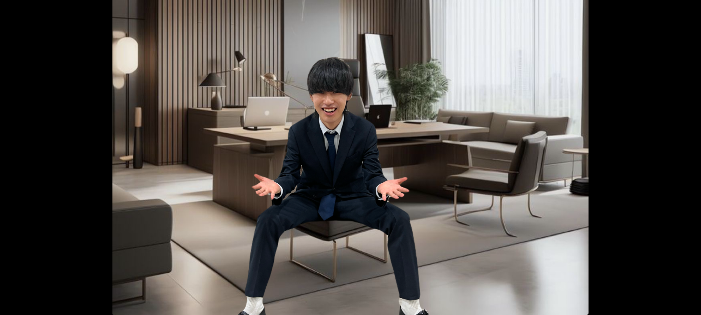
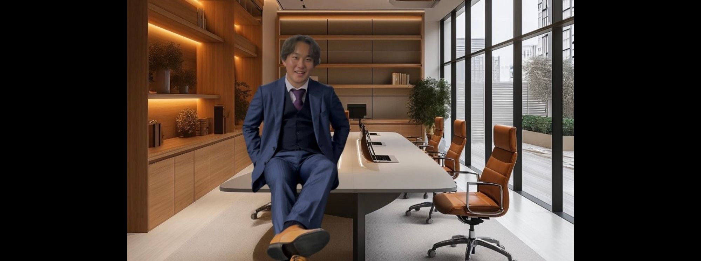

代表挨拶Representative Greeting

皆様、当社ホームページをご覧いただき誠にありがとうございます。代表取締役の黒須でございます。 当社は創業以来、食の安全とお客様に対する誠実さを第一に掲げ、「イカ焼き」という日本の伝統的な食文化を通じて、皆様に笑顔と安心をお届けしてまいりました。今日、世界情勢や社会環境が急速に変化する中、私たちはこれまで以上に「食」のあり方を見つめ直し、食を通じた豊かな生活を提供することに使命感を持って取り組んでおります。 食の安全に対する意識がかつてないほど高まっている現代において、私たちは厳しい品質管理基準を設けています。使用するイカは、産地からのトレーサビリティを徹底し、常に新鮮で安全な食材を確保することに努めております。また、加工工程においても最新の技術を駆使し、衛生管理を徹底しています。お客様にご提供する一つ一つのイカ焼きが安心して食べられるものであることは、私たちの最も重要な責任であり、誇りでもあります。 イカ焼きというシンプルな料理でありながら、その奥深さと品質には強いこだわりを持っています。私たちは、鍛え上げられた社員の手で一つ一つ丁寧に焼き上げ、イカ本来の旨味を最大限に引き出す技術を磨き続けています。焼き加減やタレの調整には細心の注意を払い、最適なバランスを追求しています。お客様が食べる一瞬一瞬に喜びを感じていただけるよう、日々改良を重ねています。 食は、単なる栄養の供給だけではなく、人と人との絆を深める大切な要素です。私たちのイカ焼きも、家族や友人、仲間との食卓で共に楽しんでいただける存在でありたいと考えています。食卓を囲む時間は、幸福や安心感を共有する貴重な瞬間です。当社は、そんな「食」の力を信じ、より豊かな食の体験を提供することを目指しています。イカ焼き一つから広がる小さな幸せが、人々の心を温め、日々の活力になることを願っております。 私たちの成功の背景には、何よりも社員一人ひとりの努力と情熱があります。社員は、私たちの「食の安全」と「お客様へのこだわり」を体現する存在です。彼らの献身的な姿勢が、私たちの商品を支え、信頼を築き上げています。私たちは、社員が安心して働ける環境を提供し、自己成長を促す機会を大切にしています。個々の能力が最大限に発揮されることで、企業全体が成長し、それがまたお客様へのサービス向上に繋がると信じています。 今日のグローバルな世界において、食の価値やあり方は絶えず変化しています。世界的な食料問題や環境への配慮、サステナビリティへの関心が高まる中、私たちは地元の伝統を守りつつも、これらの課題に真摯に向き合い、持続可能な未来を見据えた事業展開を進めています。地元産業の活性化や環境保全を意識した製品づくりを目指し、企業としての責任を果たしてまいります。 今後も、変わりゆく社会の中で、私たちは挑戦を恐れず、より高い品質とサービスを追求し続けます。そして、何よりもお客様の信頼に応え、皆様に愛される「イカ焼き」を提供するため、全力を尽くしてまいります。 これからも当社への変わらぬご支援を賜りますよう、心よりお願い申し上げます。
代表取締役 黒須 裕哉
シフトマネージャー挨拶Shift Manager Greeting

当ウェブサイトをご覧頂き誠にありがとうございます。 はじめに、皆様の日々の献身的な仕事ぶりのおかげで、私たちオープンキャンパススタッフは着実に成長を続けています。シフト勤務で多忙な日々を贈るスタッフの皆さんには、心から感謝いたします。皆さんの笑顔と活気が私たちの団体を支えています。 私はシフトマネージャーとしてお客様の満足度はもちろん、オープンキャンパススタッフ全員の満足度も同時にあげられるよう、スタッフ一人一人のニーズにあった役割分担、シフト時間を作成しております。スタッフ一人一人の幸福を大切とし、仕事とプライベートのバランスを保ち、心身ともに健康でいられるような環境作りを我々としても積極的に務めて参ります。スタッフの要望を第1として考え、柔軟に対応できるよう普段からスタッフとコミュニケーションをとり、要望を言いやすい良好な関係を築いております。「お客様の笑顔のためにスタッフが笑顔になる」を掲げ、日々精進して参りました。 美味しい烏賊焼きと笑顔で活気溢れる我々の接客をどうぞお楽しみください。
シフトマネージャー 関 宥哉
食品衛生管理責任者挨拶Food Hygiene Manager Greeting

皆さま、こんにちは。 当ウェブサイトにお越しいただき、誠にありがとうございます。 私たちは「食」という普遍的なテーマに真摯に向き合い、その安全性と品質に対して常に最善を尽くしてきました。今日、世界は急速に変化しており、技術や経済がめまぐるしく発展する中でも、「食の安全」は変わることのない最も大切な価値の一つです。現代社会における情報の流れやグローバル化の進展に伴い、私たちはより懸命にそして責任を持って烏賊を選び、お客様に提供する必要があると強く感じています。 食がもたらす「幸福」とは、ただお腹を満たすことに留まらず、私たちの心と体を健やかにし、家族や友人との絆を深める力があります。私たちは、すべての人々にこの「食の幸福」を届けたいという思いで、烏賊、そして秘伝のソースにこだわりを持ち続けています。 烏賊1匹1匹の背景には、作り手の情熱や自然の恵みがあります。そしてその烏賊が、お客様のもとへ安心して届けられ、食卓に笑顔をもたらすことが私たちの最大の喜びです。スタッフ一同、常に「安心」と「幸福」を最優先に、烏賊を通じてお客様一人一人の生活の一部に貢献し続けていくことをお約束いたします。 これからも、皆さまの信頼に応えるべく、食に対する私たちのこだわりと熱意を持って前進してまいります。引き続き、温かいご支援とご愛顧を賜りますよう、心よりお願い申し上げます。
食品衛生管理責任者 前嶋 健人
最高技術責任者挨拶Chief Technology Officer Greeting

私が制作したこのサイトをご覧のみなさま、日頃より格別のご支援を賜り、誠にありがとうございます。私は最高技術責任者として、これまで様々なプロジェクトに携わり、ビジネス成長と課題解決を探求してまいりました。IT技術の進化は目まぐるしく、その変化に対応することが我々の使命であり、挑戦です。みなさまのニーズに的確に応えるため、技術力の向上はもちろんのこと、業務の効率化、セキュリティ対策、そして何よりも客観性を重視したソリューション提供を心掛けております。 現代のビジネスにおいて、システムは単なる業務ツールに留まらず、戦略的な資産となっております。最高技術責任者の役割は、単にシステムを作ることではなく、みなさまが直面する課題を共に考え、最適な解決策を導き出すパートナーであると考えています。そのために、私は常に新しい技術に対する好奇心を持ち続け、変化を恐れず、最適なソリューションを提供できるよう努めてまいります。 今後もオープンキャンパススタッフ一丸となって、みなさまのお力になれるよう全力で取り組んでまいりますので、引き続きご指導ご鞭撻のほど、何卒よろしくお願い申し上げます。みなさまの信頼を裏切らないよう、私たちは一歩一歩着実に前進し、さらなる成長を目指して邁進してまいります。 結びとなりますが、みなさまのますますのご発展とご健康を心よりお祈り申し上げます。今後とも変わらぬご愛顧のほど、よろしくお願い申し上げます。
最高技術責任者(CTO) 染谷 拓海